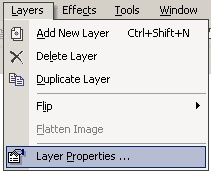
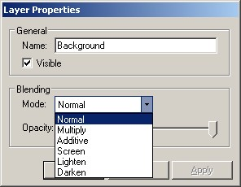

Layer Properties
|
 The Layer Properties (Layers-->Layer Properties) available to you to alter include the name of the layer, and a possible blending effect with the layers below it. The picture to the left illustrates the various attributes which are changeable. Note: You may not alter the layer properties of the Background layer. Everything else though, is fair game. |
|
 In the image to the left, the pull-down menu is covering up the opacity setting. This setting is critical to the amount of blending that will take place between the top-most layer and the layer below it. The maximum setting (which is shown in the picture) is an opacity setting of 255. This setting doesn't allow any blending between the layer and the layers below it. In order to achieve blending, the slider bar must be slid down. |
| Note: You can perform the Delete Layer Operation from either the drop-down menu (Layers-->Layer Properties) or from the Layers Window. |
|
|
|
| A Normal blend between two layers at an opacity of 152 | An interesting effect caused by duplicating a layer twice, applying various blur effects to the new layers, and then setting the new layers' blending properties to Lighten. |